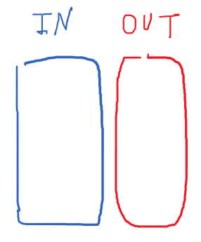
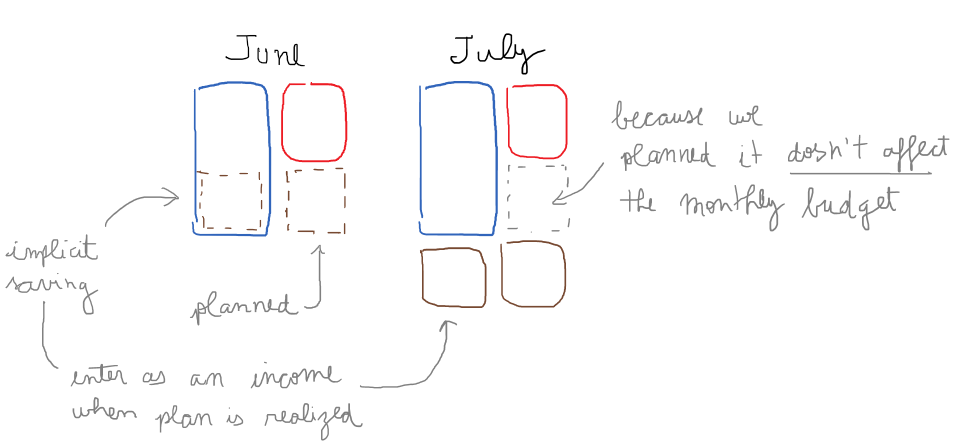

Principles for budgeting
Guiding principles on thinking about budgeting, based on own experience, accounting knowledge and budgeting software like YNAB. Budgeting foremostly should be simple and easy.
Every money should have a destination
Rationale
This principle is a consequence of the budgeting statement which should be balanced. The income should be equal the expenses.
What are budget flows?
Income and expenses can be categorized in two types, capital and current. Their loose is easily understood as:
-
capital income: from borrowing.
-
current income: from own labor.
-
capital expenses: investments.
-
current expenses: general spending.
Why distinct the flows?
Because, for instance, an investment is outward flow, however is considered a "good" expense. In the same way, when you borrow money you get an inflow, but this is not a "good" one.
But at end of the day, outflows should be equal to inflows.
The budget should always be balanced
Rationale
Same idea with the balance statement, always in equilibrium due the double-entry bookkeeping system. The budgeting statement also derives from a system of accounts that follow the double-entry system.
However they represent a different set of accounts from the ones that keep track of your assets. For practical purposes, those accounts can be omitted and the statement can be done directly.
We can represent a balanced budged with,
What deficits means?
If your inflow is not able to cover your outflow, you are going to have a deficit.
A deficit month should not be ignored. If you need to pay interest for a loan for example, things can go out of control fast.
You need to see a deficit as borrowed income from future. Which in practice balances out the deficit. But I do not think it is a good idea to register a loan from your future self (which is by the way what the Government does). So we keep the negative balance as a sign of alert.
How to manage deficits?
Last month deficit should be this month expense
It is top priority is to cover last month deficit with this month surplus.
This month surplus should go to investments or planned future purchases
Rationale
If you have a surplus after discounting all your general expenses (fixed and variable). You should use the surplus on your investments or planned purchases. This ensure that we stay balanced.
Why use planned purchases?
To stimulate more intention behind a purchase.
The idea is to accumulate funds over time to reduce the stress on a particular month balance.
What about big purchases?
Budgeting in practice
Why I use a simple spreadsheet?
I have Total control. it is flexible and simple.